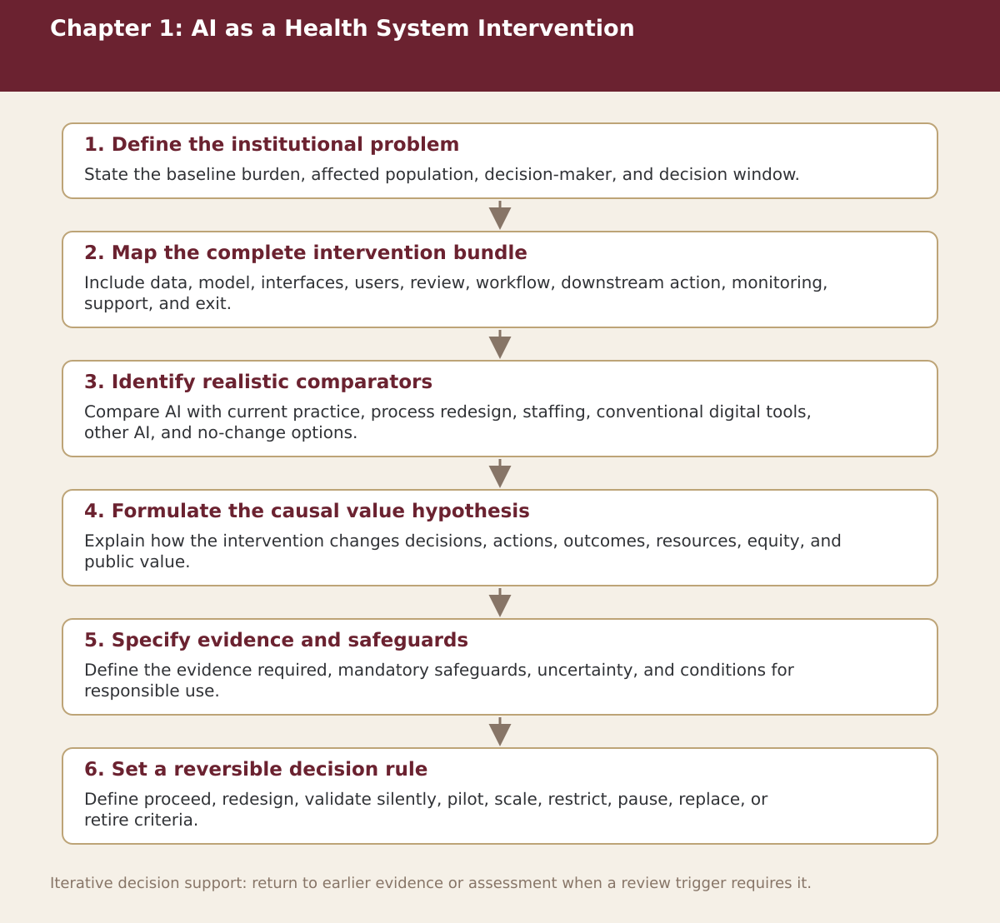

Chapter 1
AI as a Health-System Intervention
Chapter-level process map linking the chapter’s decision questions to the companion resources and decision gates.

Process steps
| Step | Stage | Purpose | Required Input | Expected Output | Decision Or Gate |
|---|---|---|---|---|---|
| 1 | Define the institutional problem | State the baseline burden, affected population, decision-maker, and decision window. | Local evidence and the prior approved step | Versioned record for: Define the institutional problem | Proceed, revise, escalate, restrict, or stop as appropriate |
| 2 | Map the complete intervention bundle | Include data, model, interfaces, users, review, workflow, downstream action, monitoring, support, and exit. | Local evidence and the prior approved step | Versioned record for: Map the complete intervention bundle | Proceed, revise, escalate, restrict, or stop as appropriate |
| 3 | Identify realistic comparators | Compare AI with current practice, process redesign, staffing, conventional digital tools, other AI, and no-change options. | Local evidence and the prior approved step | Versioned record for: Identify realistic comparators | Proceed, revise, escalate, restrict, or stop as appropriate |
| 4 | Formulate the causal value hypothesis | Explain how the intervention changes decisions, actions, outcomes, resources, equity, and public value. | Local evidence and the prior approved step | Versioned record for: Formulate the causal value hypothesis | Proceed, revise, escalate, restrict, or stop as appropriate |
| 5 | Specify evidence and safeguards | Define the evidence required, mandatory safeguards, uncertainty, and conditions for responsible use. | Local evidence and the prior approved step | Versioned record for: Specify evidence and safeguards | Proceed, revise, escalate, restrict, or stop as appropriate |
| 6 | Set a reversible decision rule | Define proceed, redesign, validate silently, pilot, scale, restrict, pause, replace, or retire criteria. | Local evidence and the prior approved step | Versioned record for: Set a reversible decision rule | Proceed, revise, escalate, restrict, or stop as appropriate |